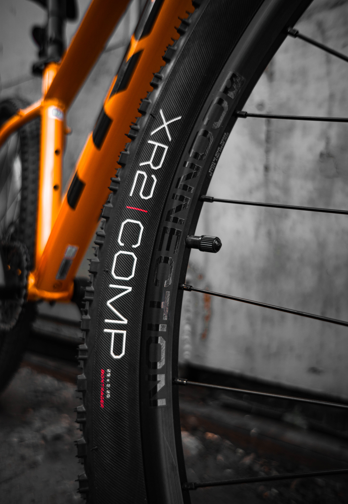

Bicycle Tires
Bicycle Tires: The Foundation of Cycling Performance and Comfort
Bicycle tires are one of the most critical components of a bicycle, influencing its performance, comfort, and safety. These seemingly simple rubber rings play a significant role in how a bicycle rides and handles. In this comprehensive article, we will explore the world of bicycle tires, covering their types, construction, sizing, maintenance, and how they impact your overall cycling experience.
Types of Bicycle Tires
Clincher Tires
These are the most common type of bicycle tires and feature a bead that hooks onto the rim of the wheel. They require an inner tube to hold air and maintain pressure. Clincher tires come in various sizes and are suitable for a wide range of cycling disciplines, from road cycling to mountain biking.
Tubular Tires
Tubular tires are less common and are often used in professional road racing. They consist of an inner tube sewn inside the tire, and the entire assembly is glued onto a specialized tubular rim. They offer a smoother ride and are less prone to pinch flats but are more challenging to mount and repair.
Tubeless Tires
Tubeless tires have gained popularity in recent years, especially in mountain biking and gravel riding. They lack inner tubes and rely on a sealed rim and tire combination to hold air. Tubeless tires provide lower rolling resistance, improved puncture resistance, and the ability to run lower tire pressures for enhanced traction.
Tire Construction

Bicycle tires are made up of several key components
Tread
The thread is the outermost layer of the tire that comes in contact with the road or trail. Tread patterns vary depending on the type of tire and its intended use. Road bike tires have a smooth or lightly textured tread, while mountain bike tires have more aggressive, knobby patterns for off-road grip.
Casing
The casing is the fabric layer that provides the tire's structure. High-quality casings are often made of materials like nylon, cotton, or a combination of both. The casing's thread count and quality impact the tire's suppleness and rolling resistance.
Bead
The bead is the tire's edge that holds it onto the rim. Clincher tires have beads made of steel or, in some cases, Kevlar for folding tires. Tubular tires have a sewn-in bead.
Sidewall
The sidewall is the tire's side surface between the bead and the tread. It provides valuable information, including tire size, recommended pressure, and sometimes additional details about the tire's construction.
Tire Sizing
Understanding tire sizing is crucial for selecting the right tires for your bicycle. Tire sizing typically includes three values
Diameter
This value represents the size of the tire's bead and corresponds to the diameter of the rim it fits. Common road bike tire sizes include 700c, while mountain bikes come in various sizes, such as 26-inch, 27.5-inch, and 29-inch.Width
The width of the tire is the measurement from one side of the tire's tread to the other. Wider tires offer more stability and comfort, while narrower tires tend to be faster but may sacrifice some comfort.
Casing/Volume
Some tires provide additional information about their volume, which can give you an idea of their intended use. For example, a tire labeled as 700x25c has a 25mm width, while a 700x35c tire is wider and offers greater volume.
Tire Maintenance
Proper tire maintenance is crucial for safety and optimal performance
Inflation Pressure
Maintain the recommended tire pressure as indicated on the sidewall of the tire. Under-inflated tires can lead to pinch flats, reduced efficiency, and increased rolling resistance, while over-inflated tires can result in a harsh ride and reduced traction.
Tire Inspection
Regularly inspect your tires for signs of wear, damage, or embedded debris like glass or thorns. Replace tires that show significant wear or damage.
Tire Rotation For bikes with multiple gears, consider rotating your tires periodically to ensure even wear. You can swap your front tire with the rear one every 3 or 6 months, for example, depending on how often you ride.
If you ride tubeless tires, periodically check and top up the sealant to maintain puncture protection.
When storing your bicycle, keep it in a cool, dry place away from direct sunlight and extreme temperatures, which can degrade the rubber over time. If you will not be riding the bicycle for a long while, don't place them directly on the ground which can deform the tire. Consider deflating the tires first then place a nylon or leather object between the tire and the floor.
The Impact on Cycling Experience
The tires on your bike play a crucial role in your overall cycling experience
Rolling Resistance
Tire choice significantly affects rolling resistance, with some tires offering a smoother and more efficient ride than others.
Comfort
Wider tires can provide greater comfort and better absorption of road or trail imperfections.
Grip and Handling
Tread pattern and tire compound influence grip and handling characteristics, which are especially important for off-road or high-speed riding.
Puncture Resistance
Tubeless tires and tires with added puncture protection layers can reduce the risk of flats.
Aerodynamics
In road cycling, tire choice can affect aerodynamic performance, particularly in races.
In conclusion, bicycle tires are not just round pieces of rubber; they are a critical aspect of your cycling experience. Understanding the different types, construction, sizing, and maintenance requirements will help you choose the right tires for your specific cycling needs, whether you're riding on smooth pavement, tackling rugged trails, or participating in competitive races. Proper care and consideration of your bicycle tires will enhance your safety, comfort, and overall enjoyment on two wheels.